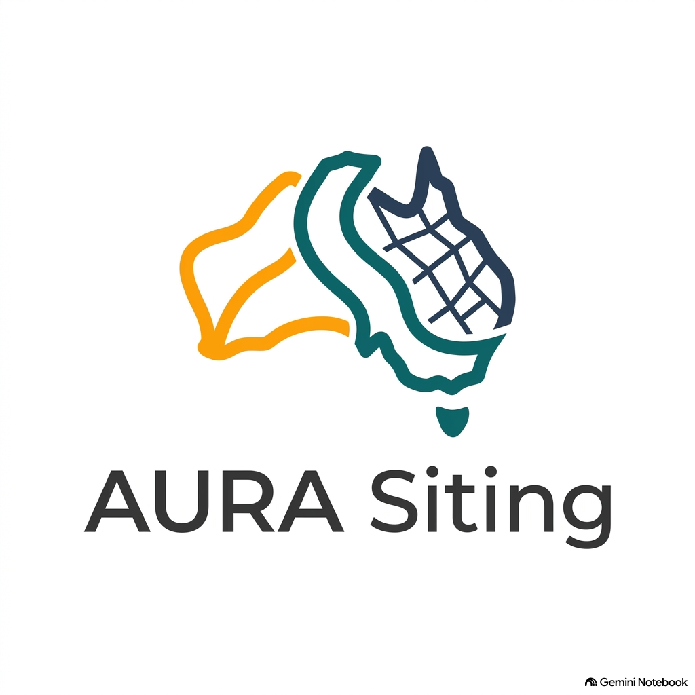

AURA 3D Digital Twin | LMCC Macquarie Coal
CesiumJS 3D • ELVIS 1m LiDAR • NSW Spatial Services High-Res
🌐 2D WebGIS
📑 Site Report
🇦🇺 National Report
🖨️ 300 DPI Export
🗺️ 3D Siting Layers
1m LiDAR Active
High-Res Basemaps
NSW High-Res 10cm
Esri Satellite
NSW Topo & DEM
OpenStreetMap
🏷️ Map Labels
Show/hide billboard labels
Toggle All
ELVIS 1m LiDAR & Terrain
1m LiDAR Contours (20-110m AHD)
Labels
1m Slope Model (0-5% / >20%)
Labels
ELVIS 4.8 GB LiDAR Extent
Labels
NSW Cadastre Parcel Boundaries
Precision Siting Pads & Grid
10 Developable Pads (154 ha)
Labels
330kV Substation & 49 MWh PHES
Labels
Rail Loop & Haul Road Spine
Labels
Koala Biolink Corridor (28 ha)
Labels
3D Acoustic Bunds (8m Height)
Labels
Mine Subsidence (G1-G3 Zones)
Labels
1% AEP Flood Inundation Corridor
Labels
Lake Mac Live IoT Sensors
Labels
📡 Live IoT Telemetry
🔄 Refresh
ATM41 & Decentlab Sensors
LIVE
--.- °C
Ambient Temp
--.- %
Rel Humidity
--.- m/s
Max Wind Speed
---- hPa
Atm Pressure
--.- W/m²
Solar Radiation
--.- km
Lightning Distance
Lake Macquarie Network
Syncing...
🔍 Selected Feature Details
Click any 3D developable pad, 1m LiDAR contour, 330kV switchyard, biolink zone, or live IoT sensor pin on the globe to inspect engineering parameters.
🪐 Overview
⛰️ 1m LiDAR Relief
⚡ 330kV & PHES
🏢 Pad 1-4 Mega-Hub
🌿 Koala Biolink
📡 Live IoT Stations